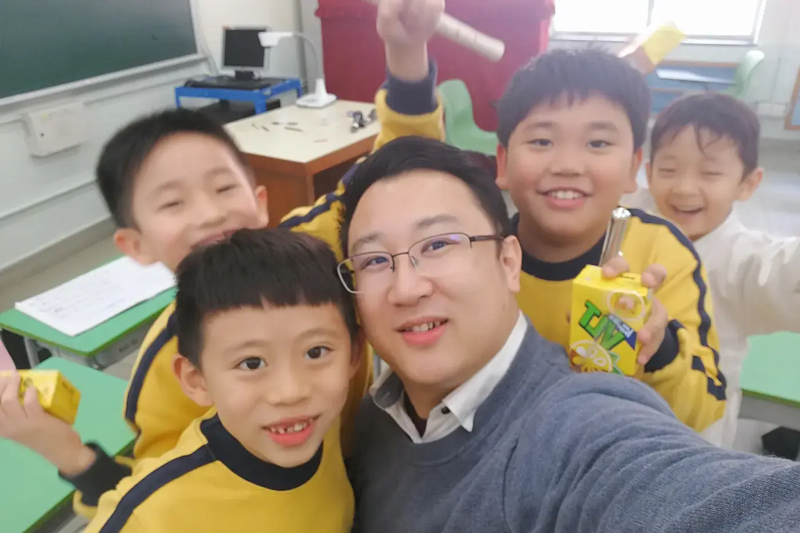

孩子第一次上音樂課，不必先背好音名，也不用急着買齊用品。較有用的準備，是讓老師了解孩子接觸音樂的經驗、想學的樂器，以及平日可安排的練習時間。

孩子快要上第一堂，難免想替他把路先鋪好。要準備的東西比想像中少，大部分也可以等上完第一堂才定。
第一次上課，家長可以做甚麼？
已有樂器或教材，先向老師說明，方便討論是否合用。
和孩子談上課時，說得輕鬆具體就好：「去聽聽聲音，試試怎樣玩。」第一次見面前，不用設定考級或演出的成績目標，先看看孩子的反應。
家長可以帶幾個實際問題去：
- 第一階段學甚麼？
- 回家怎樣練？
- 家長需要協助多少？
孩子年紀較小，也可以討論樂器重量、手指跨度、專注時間和課堂節奏。這些不能只按歲數作同一安排。
上課時，留意老師怎樣示範和拆解問題，比看孩子當天吹出多少音更有意思。第一次緊張、安靜或特別興奮，都未必是日後的固定狀態。
下課後先聽孩子說。「哪個聲音你最記得？」「有甚麼想再試？」都比追問表現和排名好。家長的觀察也可以帶回老師，讓雙方了解孩子真正的反應。
若決定繼續，先建立簡單的練習位置與時間，再逐步添置用品。第一堂只要讓下一次上課仍有一點期待就夠，天分高低不必急着證明。
買第一件樂器，先試甚麼？
第一件樂器很容易被看成一份承諾：買了，就要一直學下去。選購時更應先看是否合手、是否容易發聲、保養安排是否清楚。讓孩子實際試用，才發現網上規格和照片沒有說出的事。
別只按年齡或品牌選。吹管的長度、重量、孔距或按鍵安排，都可能影響姿勢。孩子拿得起，不代表能在練習中舒服地維持。
試用時，請老師看看孩子有沒有聳肩、扭手腕或過度伸手。先用容易的音和動作，不要憑當天能否吹出漂亮旋律判斷一切，初學技巧仍在建立。
了解售後、維修和日常清潔，把這些費用和時間一起考慮。二手樂器也要經合適檢查，外觀光亮不代表狀況良好。
保養可以分工。孩子做得到的收納步驟教清楚，較細緻或需要力量的部分由成人協助。樂器不應成為只准觀看、不敢碰的昂貴物件，也不宜完全交給孩子自行摸索。
購買前整理好預算和學習方向，再和老師討論。好樂器讓孩子更容易練正確的動作、聽清自己的聲音，不用替一家人背負「一定成功」的期待。
香港家居，練習角怎樣設？
每次練習都要搬椅子、找鉛筆、借手機開節拍器，孩子還未出聲已經分心。練習角不需要獨立房間，只要常用物品放在容易取用的位置，開始便少一些阻力。
香港住家空間有限，一個可移動的譜架加一處固定收納已經幫到忙。先看光線、譜架高度、坐位和樂器支撐是否合適。地方整齊也不只為好看，還能減少跌碰樂器、低頭看譜和臨時找用品的麻煩。
把當週教材和老師的簡短要求放在一起，舊樂譜另行收好，孩子打開便知道由哪裏開始。鉛筆、擦膠和合適的清潔用品也各有位置。
電子裝置用來錄音或打拍子，可以先設定好要用的功能，減少通知和遊戲的干擾。家長不用全程監看，協助建立清楚用途就好。
練完也有個小收尾：按樂器需要清潔、收好，把下次要練的位置留個記號。收納步驟配合孩子能力，讓他逐漸參與，不必每次由成人趕着接手。
理想的練習角不用複製一間音樂室，走近時知道下一步就夠了。
常見問題
第一堂之前要先買樂器嗎？
不用急。先和老師談，已有樂器就說明，看是否合用。決定繼續後，讓孩子試過再買。
孩子第一堂很安靜，是不是不喜歡？
未必。第一次緊張、安靜或興奮，都不一定是日後的狀態。下課後問問他最記得哪個聲音。
家裏地方很小，可以怎樣安排？
一個可移動的譜架、一處固定收納已經足夠。當週教材放在一起，孩子打開便知道由哪裏開始。
今個星期可以先做一件小事：把孩子的音樂經驗和家中能練的時間寫下來，上課時交給老師。想看課堂怎樣配合家庭，可以讀家長學習指南；開始練習之後的日常，接着看陪練的日常。